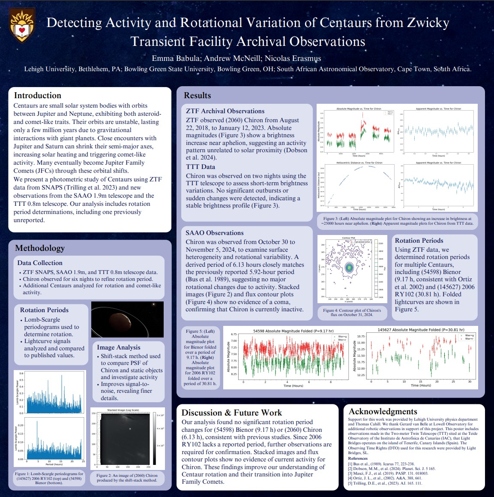

Poster Presentations
Scientific posters presented at major astronomy conferences
245th American Astronomical Society Meeting
Title: Detecting Activity and Rotational Variation of Centaurs from Zwicky Transient Facility Archival Observations
Location: Washington, D.C.
Date: January 2025
56th Lunar and Planetary Science Conference
Title: Detecting Activity and Rotational Variation of Centaurs from Zwicky Transient Facility Archival Observations
Location: The Woodlands, TX
Date: March 2025